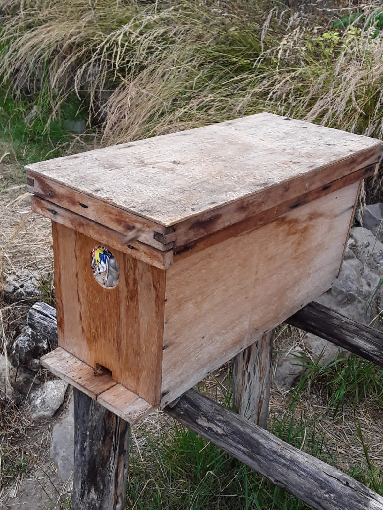

El éxito en la crianza de abejas y producción de miel comienza con la elección adecuada del lugar para establecer el colmenar. Busca un área que esté alejada de fuentes de contaminación, pesticidas y corrientes de aire fuertes. Un entorno con acceso a agua fresca también es esencial para las abejas. La orientación de las colmenas debe ser hacia el sol, preferiblemente hacia el este, para que las abejas se calienten rápidamente y salgan a forrajear temprano.